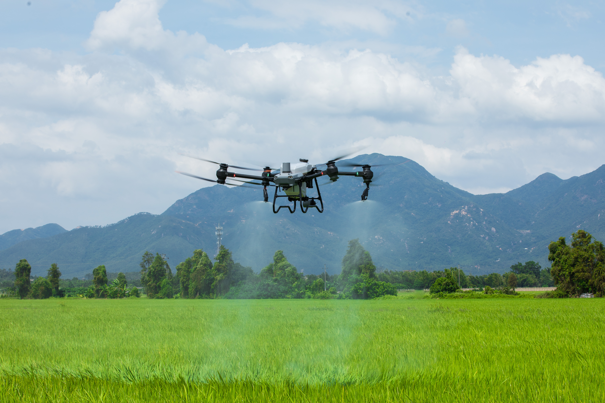

Distributeur officiel DJI — Algérie
Solutions agricoles DJI Agras
Pulvérisation de précision, épandage à grande capacité et cartographie multispectrale. Choisissez un équipement adapté à vos cultures, à vos surfaces et à vos objectifs de gestion des intrants.

Découvrez un cycle d’exploitation à quatre batteries
Planifiez la rotation des batteries et les équipements de charge compatibles pour réduire l’attente entre les vols.
Catalogue Agriculture
Drones de pulvérisation, d’épandage et de cartographie
Aucun drone agricole ne correspond à cette sélection.
Support technique local
L’accompagnement agricole Equip Drones
Choix d'appareils
Nous analysons vos besoins (cultures, relief, rotation) pour déterminer le modèle et les accessoires adaptés à votre projet.
Prise en main et sécurité
Formation pratique de vos opérateurs aux plans de vol automatisés, à l'étalonnage des buses centrifuges et aux protocoles d'entretien quotidien.
Continuité de chantier
Hélices, bras, moteurs, pompes et buses DJI d’origine, avec un accompagnement local pour limiter l’immobilisation. La disponibilité des pièces et le délai d’intervention sont confirmés pour chaque demande.
Prêt à équiper votre exploitation ?
Échangez avec nos conseillers techniques agricoles pour évaluer vos besoins et préparer un devis adapté.